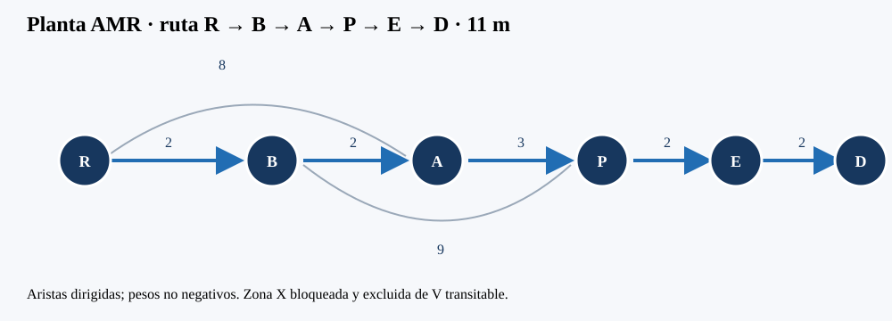

Autómatas, rutas, inventario y límites computacionales
Daniela Castellanos · Jeanneth Cabascango · Alejandro Guamán
Borrador → Confirmado → Reservado → Preparación → Empacado → Despachado → Entregado
Cierre alterno: Cancelado
Solicitada → Validada → Reservada → Consumida
Cierres alternos: Liberada y Rechazada
Borrador → Aprobada → Enviada → Recibida → Cerrada
Cierres alternos: Rechazada y Cancelada
Para cada DFA: Q, Σ, q₀, F y δ. Una transición ausente rechaza la secuencia.
123456 y 7123 y 1241234 y 55 y 153 y 1352 y 2El verificador lee los tres archivos .jff y obtiene 6 aceptaciones y 6 rechazos esperados.
Resultados: automatas/resultados_jff.md y automatas/resultados_visuales/

Modelo: grafo dirigido, pesos no negativos en metros, zona X bloqueada.
Dijkstra: O((V+E) log V) tiempo. El predecesor permite reconstruir la ruta.
Elegir lotes elegibles por vencimiento y luego por código.
Excluir vencidos y lotes sin disponibilidad. Reserva atómica si el stock no cubre el pedido.
O(L log L) tiempo y O(L) espacio.
Posición = disponible + en orden − reservado.
Si posición ≤ mínimo: sugerir objetivo − posición.
Ejemplo: 18 + 10 − 5 = 23; sugerencia = 27.
O(P) tiempo.
Alcanzabilidad: BFS
Ruta mínima: Dijkstra
Flujo máximo: Edmonds–Karp
Isomorfismo de grafos
Factor acotado
Logaritmo discreto acotado
Automorfismo no trivial
3-SAT
TSP de decisión
Vertex Cover
P ⊆ NP. Un certificado verificable no demuestra por sí solo que el problema sea NP-completo.
¿Se pueden elegir como máximo k zonas para que cada corredor tenga un extremo elegido?
Para A–B–C y k=1, el certificado {B} cubre las dos aristas.
Verificar un conjunto requiere O(V+E).
La reducción desde Vertex Cover es la identidad: grafo y k se copian.
La búsqueda exacta puede requerir O(2V(V+E)).
El correo pide cubrir aristas, no dominar vértices vecinos.
TSP se decide enumerando recorridos finitos. El costo factorial puede ser impracticable para una operación real.
Para programas arbitrarios no existe un decisor general que siempre termine y determine si se detienen.
Código, pruebas, informe y modelos quedan versionados en el repositorio.